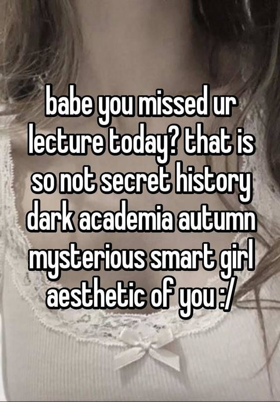
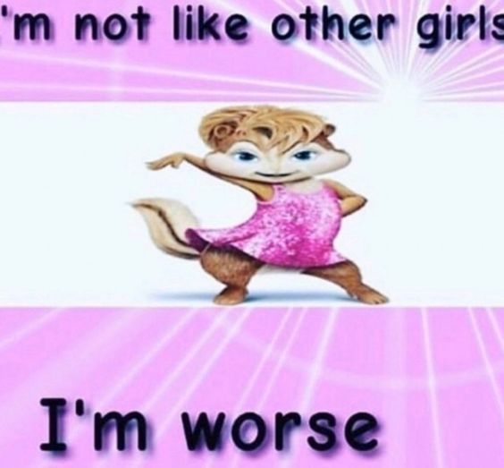

Diary entries on my journey to be a fancy IT bitch
2nd May
It's so tiring. No resource can explain basic JavaScript well enough.
W3Schools is the worst so far. One sentence explanations and they call it a day?
Green book is a bit more helpful but still lacking sometimes.
Just understanding, how loops work, took me a lot of time. I wanted to do exercises from the book as well but I can't even grasp what the author actually wants me to do.
So much time and I still can't write anything because I can't understand how it all works and connects to each other.
I'll try with YouTube tutorials for dummies. Maybe they'll be better...
In the meantime, I am learning SASS. It's connected to CSS, so it should be a bit easier for me.
I'm just irritated that no resourse can be good enough. It almost feels that you need to have some knowledge before you can even start with the basics?
Or maybe IT people are just bad teachers, lol.
19th April
Wow, long time without an update!
At the very last day of March I finally got the CSS certification. I am getting closer to my small goal!
The CSS exam was harder than I expected but I think I did well anyway. I scored 61 out of 70 points.
Now that I rested a bit, I can try with JavaScript again.
It's a bit like a love-hate relationship though. It's getting so complicated!
However, I started reading the JavaScript chapter in the green book and now it doesn't seem THAT complicated anymore?
Of course, there's a lot of new things and it's a bit overwhelming but with this book, it's not so bad like it used to be...
I hope I'll tame JS as well as HTML and CSS! Wish me luck!
24th March
Hi! Long time no see!
I have been studying diligently for the past days for the certification exam.
I already went through 12 out of 16 modules, so I am really really close.
However, things are taking a bit longer than I expected. I wanted to get the certification until the end of the month, but it may be very tight.
I'm not in a hurry, it's just my personal deadline I wish I could meet. But it's ok if I can't.
CSS can be pretty complicated at times. I enjoy, however, how many things you can do with it.
I applied flexbox model in the menu at the top of the website. Just to practice the properties etc.
I'm not sure if it changed anything but at least I practiced. It's actually fun.
Maybe I should slowly start copying websites' layouts for practice too?
I'm really lacking ideas haha
10th March
I am getting so advanced with CSS. But I feel like I forget everything the moment I turn the laptop off...
What should I do? More practice? I guess so?
The menu looks so messy right now. How can I clean this up? How to make it more organised?
So many questions and no answers!
I'm thinking of making an animation with CSS but what should I make it do?
What about this? Isn't it cool? OMG! I can't believe I can do such things!
Today I've also learned about tooltips but the explanation was so messy... I don't think I get it.
4th March
Good afternoon in the new month! I can't wait to see how much I can accomplish in March.
I hope it will be as productive as the previous months. I am slowly getting closer to that CSS certification.
4/16 modules done. I also learned about 2D and 3D transformations and about transitions.
This is all so cool! I can't wait to try them but for now I dont really have an idea how...
Let's see this:
What do you think? Isn't it cute?? What else can I do with it?
I need to think more about it but I'm sure I'll get plenty of ideas!
Btw... do you like the new header?
27th February
Another day of learning.
I just finished the second module of the CSS certification! 2/16 done!
When it comes to the "advanced CSS", I learned about text effects and web fonts.
Unfortunately, I find text effects still a bit hard with all this word spacing and breaking and wrapping...
There is also something like a font-face rule that would let me use my own font.
How can I make my own font? It sounds cool, I guess?
I am feeling a bit sick so my learning capabilities could decrease a bit, sorry! But I am still trying hard, I swear.
Here's another song of the day because why not:
23rd February
I am a top super ladyyy~
I am so on fire recently. I started going through the modules for the CSS certification. Right now I am in the middle of the second one!
Today I've also learned about box-shadow and text-shadow properties. It's so fun. I feel like I can make so many things with it.
I thoguht it would be a good way to make flashcards, so here is my try:
Hi, how are you?
Previously I went through the chapter about gradients. They are placed using background-image property, hm.
I asked ChatGPT what the difference is when creating a picture with SVG and CSS gradient and there actually is some difference!
It's still better to use SVG though. Because when you resize, the quality of the pic is still good. It's also easier to edit because it's just code.
12th February
Hiiiii! Sorry for no info these days, but I have an update. Or several ones.
First of all, in the menu you can see a new link. I created a form.
I did it to practice making a form and to learn input types better.
It was a bit hard at first but after some time it definitely became way easier!
The input of my form is not sent anywhere tbh but I just wanted to practice the form of a form itself.
The second thing is.....
Yesterday (11.02.2024) I officially became an HTML developer! I got my first certification, scored 68 out of 70 points!
Now I can focus more on CSS and basics on JavaScript. It feels that I am really making a progress and getting closer and closer to my new life.
8th February
Hello!
I need to admit that SVG is kinda fun when you practice a bit and know more or less what to do.
And it's fun experimenting with colours etc.
Here is my new picture:
This time I tried to make a gradient. What do you think? It's like a small logo.
I also picked a new font. I wanted to use something that looks handwritten.
This page is like a diary for me, so using a handwritten font makes it look a bit more personal?
The more I practice, the less scary it is :)
6th February
Hello!
I am getting closer and closer to the final certification test!
Now I am taking it slow and just practice code, especially things that I haven't tried yet.
One of them is drawing pictures.
Canvas are a bit to hard for me right now. Maybe I'll try another time?
For today I drew a heart. I hope it's nice as for my very first trial!
Here is how it started:
And here is the final result:
What do you think? Try to hover on it too. It was so haaaaard but I am so proud that I did it by myself!
At first I used polygon points like in the W3Schools tutorial when they made a star. But then it turned out that I can't round the strokes and edges.
Apparently, radius attribute doesn't work with polygons. I had to find another way.
So ChatGPT told me about the path element and everything was a bit easier since then.
I'll practice SVGs a bit more maybe and then I'll work on forms.
1st February
Don't think that I forgot again!
I am studying every day. I keep preparing for the certification and worked on the resources page a bit. Go and check out!
JavaScript is so hard... The explanations on W3Schools give me more confusion than clearity.
I am focusing now on understanding the most basic terminology. I'm asking ChatGPT many questions and taking notes.
I guess I need to look for a tutorial on YouTube "JavaScript for dummies" or something because I am so confused!
26th January
Anothder day, another slay!
Almost lol I was trying to make this dropdown menu but it was so hard and there was something wrong all the time that I gave up.
I don't care enough about it for now.
Today I've learned about comments and syntax in JavaScript. So far, so good.
In my preparation for HTML certification, I came across the topic of the image map again.
I remember how confusing it was when I first learned about it months ago.
It doesn't seem so scary anymore, so here is my try:
Is it working? Do you know the movie?
25th January
Another day of learning CSS, JavaScript and preparing for HTML certification.
I'm thinking of organising this page a bit more maybe? Create a dropdown menu for each year?
My journey is getting longer and longer, and organising everything by months might create a chaos in the navigation bar in the future.
And I totally should finally start my resources page!
Fortunately, an idea for it is crystalising in my head. And I've found so many new resources and games for coding!
I'm excited to put everything in one place :)
Btw here is my new JavaScript attempt:
What do you think? Isn't it cute?
I am slowly getting the gist of writing these functions but I definitely need more practice.
24th January
I know I don't post here as often as before. Sorry!
But hopefully, I am back to regular posting. I am learning plenty of new things and I need to try them out here, hehe.
Some time ago I started with JavaScript. It's a bit complicated now but I will do my best anyway.
In the worst case, I'll ask ChatGPT tons of stupid questions and it'll have to deal with me, explaining one thing five times.
I decided to play a bit with media, so here is song of the day:
What do you think? It's a pre-release, the title track will be released soon.
I like the song for its message and sounding so silly at the same time.
The song is about society's expectations for women to be obedient wives who should only cook, clean and be good at sex.
The girls don't even lipsync the lyrics in the MV to show how women should stay quiet and only do their "duties".
I cook cream soup, taste is coco loco.
Want me as your wife, but she is umm, umm, umm.
I clean your room, it's so twinkle twinkle.
Want me as your wife, but she is umm, umm, umm.
This part is so catchy for no reason, omg. But somewhere I've also read that it represents infantilisation of women and considering them stupid. Thus, the words taste is coco loco and it's so twinkle, twinkle.
Apparently, even the outfits symbolise something, but I am too lazy right now to write full explanation here XD
That's not why I write here anyway.
4th January
Happy new year! My first post in the new year is here.
During that time I have been learning more about creating forms. But it's so complicated.
Well... for now I don't really see myself working on them. But maybe in the future?
I started learning for a certificate from W3Schools. I'm very motivated to get a high score!
The moment I pass it, I'll be officially in my IT era.
Another I've been wanting to do for some time already is creating a page with some interesting resources to learn coding that I've found so far.
I'm still thinking about the design though. I want to try something new but the page should still be coherent with this one, right?
Idk if I have anything else to say right now.
See you in the next post then! Bye!
21th December
It's been long time since my last post. I was away for some time and I didn't take my laptop with me.
I am back now and still motivated. Writing these small entries gives me joy :)
It's almost Christmas but I will try to learn a bit everyday anywany.
Recently, I have been reading about Responsive Web Design and I am thinking what I can do to improve my website.
Today I have also learned about positioning. I think position: sticky is my favourite for now.
The rest is either too basic for me or too hard to understand XD
I have been watching some YouTube videos "A day in the life of a web developer/front-end developer etc." but damn...
These people really upload a 5 min video, show how they scroll Instagram or go to gym for 3/4 of the day and that's it?
I wanted to see what a typical day at work looks like, what tasks they usually need to do, and I found out completely nothing.
11th December
Today, I've learned a bit about the
element and about layouts.
The part about layouts I found a bit hard but I'm sure it will be useful.
I've also started some JavaScript. But for this much anticipation, the chapter was a bit disappointing XD
It's ok though... I guess? I'll learn more with time and for now, I'll master what I have now.
Btw I created a small navigation menu and I finally understood how bookmarks work.
If you want to jump to an entry from a certain month, just use the navigation menu.
The menu will take you to the first entry from the month, you can see newer entries when you scroll up.
9th December
Another day, another slay.
My beautiful table is fixed now and it makes me so happy!
We had to create a class called evening, add it to tr elements and then to kinda exclude th elements from the tr:hover thing, we just specified in the style sheet that th elements need to have a certain background and font colour.
I solved the problem that couldn't be solved even by chatGPT! You can call me an IT bitch now!
I'm so motivated now. I'll keep learning HTML and CSS, and soon I'll move to JavaScript.
The moment I start creating games, the industry will be over!
6th December
Did you like tiny Kirby in the previous post? It's so cute, right? I didn't mean for it to be on the border but it looks so adorable. I'll keep it this way.
Yesterday I learned more about tables and I think now I feel ready to make one by myself.
I will show you my current skincare routine because I am forever in my skincare era:
OMG now all links turned into buttons! Crazy. But it's ok :)
29th November
OMG! It's been a month since I started learnig HTML and CSS. I can't believe it. Time really flies. How is my progress? Did I learn a lot in one month?
I had a short trip to Wroclaw to visit Christmas market and the garden of lights. It was great but I am still sick :(
Anyway... I am back and learned new things!
On W3Schools, I read chapters about customising links, making buttons and about lists.
When I will be suddenly on motivation high, I'll add some buttons here. Although I don't know yet what I should even link here.
For now, I just wanted to write what I did today! So it looks like I'm a productive bitch.
26th November
I'm visiting Christmas market in Wroclaw soon and I won't be able to learn or update here for a few days. That's why I am learning a lot now.
Today I learned about element and it was exactly what I was looking for! I have been reading about google fonts and icons today. I had no idea that using icons can be kinda complicated lol...
I've started organising the code a bit as well... To be clear, I won't change the very first ones because this is how I started. Now I am improving and I hope you can see it in the lastest lines.
Anyway, I hope to have a lot of fun with google fonts and their effects. Especially the example with Sophia on fire is wild.
I don't have an idea yet on how to use icons for now. Maybe I should use them like emojis? Idk idk...
25th November
I was feeling terrible these past days but I am getting better. It's time for a new post on Gigi's corner.
I have learned a lot about formatting text and about fonts. I know what fallback fonts are and I am thinking on applying them here. I just need to learn how to use my super aesthetic fonts first before I decide on other totally basic fonts lol
Another interesting thing I learned is white-space property. I didn't get it at first but I asked ChatGPT and it explained me better.
Understanding font-variant: small-caps was also confusing. But now I kinda get it? Anyway, it seems that lora doesn't support it, I guess? So it's not use using it here.
What else should I write? I don't know, I feel like I don't make big progress. But I know that even small steps are important.
Damn, I don't like this background. I think I'll change it again.
20th November
I thought I'm completely healed but today I feel sick again. My throat is hurting and I'm feeling so cold!
I'm not stopping thought and keep learning!
I just finished chapters about margins, padding, height and width, and learned what Box Model is.
I am still focusing on W3Schools. I am also reading a green book.
I changed the background of the website. Is it better now? I don't know anymore. Previous one was such bad quality but cozy in some way?
I tried making the borders a bit rounder. Does it look nicer now?
18th November
I've just finished the chapter about CSS backgrounds and decided to play a bit with it.
I added a picture I found on google and set it as the background.
I tried to find a good quality picture but in the end, it looks so terrible??
Anyway, it was not so easy and I had to go back to the materials a few times. It's a good practice though!
I just don't have the slightest idea how I can keep practicing these? Should I make different backgrounds for each post?
Should I change the border for each post as well? But then setting the selector previously doesn't make much sense anymore...
I'll think about it.
PS. I added a small bear gif at the top. Do you like it?
16th November
How is it looking now?
I decided to move to CSS for now. I find it interesting and I want to make my website pretty!
I'm thinking of adding a cozy silly picture as the background and making the posts a bit transparent like now.
There is a small break between the posts here because I was out and had no access to my laptop, so now I'm reviewing a bit.
Today's CSS chapter is about backgrounds. I know a bit from the HTML course already but it will help me refresh my memory and learn something new!
To be honest, I find CSS selectors a bit hard to understand, especially id selector, but I hope I learn using them with time.
Small update: I've gone through background-color, background-image, background-position and background-repeat today. Next time: background-attachment and background shorthand property whatever that is!
Update: I guess I kinda figured it out? Does it look better now?
I tried to make the whole page look like this but it turned to be one huge mess! I don't know...
7th November Another entry after some time of absence. Yesterday evening I was reading about colours and borders. That's why this entry is made in this way. Do you like it?
I just wish I knew how to make the border a bit shorter on the sides? Right now it's stretched on the whole page.
Which way of writing entries is better? This one or the old one? Now I feel like I can customise the shit out of this page, I'm such a profi!
Another thing I need to learn: how to charge colours of some chosen letters within this one paragraph code?
So far I think I'm doing good? Here I'm dropping meme of the day:

3rd November
My third entry so far. Today I have learned about formatting. However, I find certain elements a bit confusing. For example:
This sentence is bold and bald.
And this one is super important. What's the difference? It looks the same.
This sentence is Italian.
And this one is emphasised?
Omg! This sentence is so tiny! It's not like other sentences.What a pick me.
Ok, I am running out of ideenideas for thesesentences.
What should I write about? Should I keep making daddy jokes?
These entries are so chaotic omg but I don't know what else I should do to practice all of these.
I think I might be able to finish reading Schwarze Magnolie by Hyeonseo Lee today.

Next thing I have learned are quotations, like here:
Koniec i bomba. A kto czytał ten trąba. W. G.
And here I am inserting quotation marks.
It's a lot of information at once but learning HTMLis actually kinda fun! Btw...
Look at this crazy sentence lol
Written by me.
Visit me at: Please don't.
gigiscorner.w3spaces.com
2nd November
This is my second entry while documenting my IT journey. Here is what I've learned today:
This sentence is blue.
This sentence is written with Arial font.
And this sentence is bigger. Isn't it?
Move your mouse over the title of this page to see something.
Here is a poem I have recently found:
Lubię, kiedy kobieta omdlewa w objęciu,
Kiedy w lubieżnym zwisa przez ramię przegięciu,
Gdy jej oczy zachodzą mgłą, twarz cała blednie,
I wargi się wilgotne rozchylą bezwiednie.
Lubię, kiedy ją rozkosz i żądza oniemi,
Gdy wpija się w ramiona palcami drżącemi,
Gdy krótkim, urywanym oddycha oddechem,
I oddaje się cała z mdlejącym uśmiechem.
I lubię ten wstyd, co się kobiecie zabrania
Przyznać, że czuje rozkosz, że moc pożądania
Zwalcza ją, a sycenie żądzy oszalenia,
Gdy szuka ust, a lęka się słów i spojrzenia.
Lubię to — i tę chwilę lubię, gdy koło mnie
Wyczerpana, zmęczona leży nieprzytomnie,
A myśl moja już od niej wybiega skrzydlata
W nieskończone przestrzenie nieziemskiego świata.
It's written by one of my favourite Polish poets - Kazimierz Przerwa-Tetmajer.